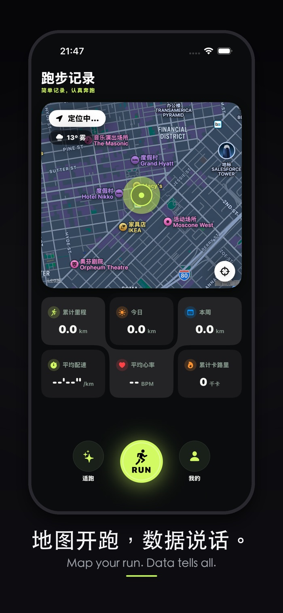
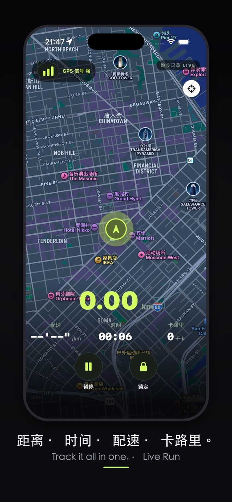
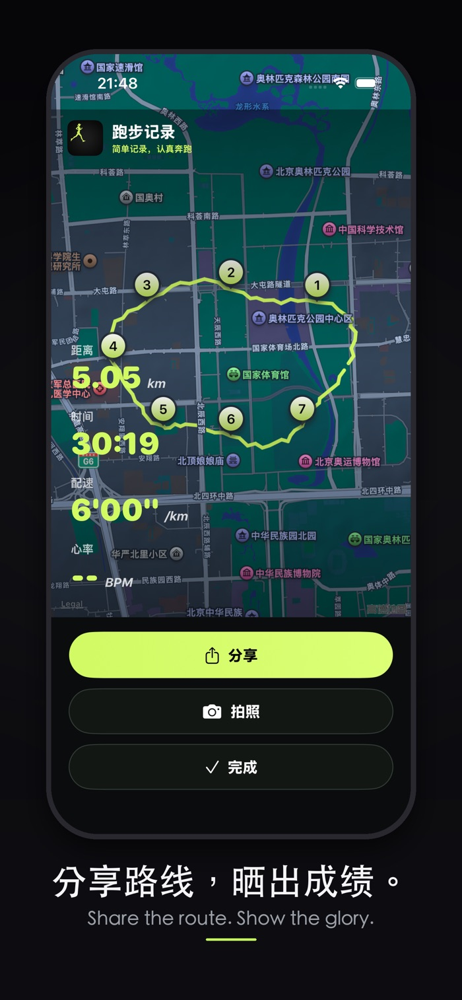
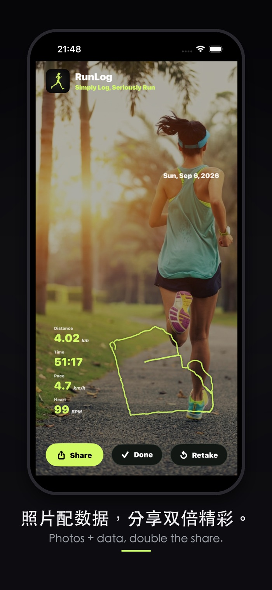

走也 Run on
App Store 名称：走也 Run on
地图开跑，数据说话。AI 看天，放心开跑。
简单记录，认真奔跑。
App Store 名称：走也 Run on
地图开跑，数据说话。AI 看天，放心开跑。
简单记录，认真奔跑。
打开就跑，零负担的跑步追踪工具。
实时绘制跑步路线，在地图上回看每一公里。
距离、时长、配速、心率、卡路里一目了然。
记录沿途风景，照片自动标记到路线上的位置。
结合当天天气与空气质量，给出今天适不适合跑的判断。
本周跑量柱状图，轻松跟踪训练进度与目标。
抬手即跑，跑完自动同步记录。也可用 iPhone 单独记录。
App Store 上的实际界面。




走也 Run on 是一款面向日常跑者的 GPS 跑步追踪应用。设计目标是「打开就跑」—— 不需要注册账号，不需要复杂的训练计划，按下开跑键，剩下的交给它。 运动记录保存在你的设备上，并通过 iCloud 在你的 iPhone 与 Apple Watch 之间同步。